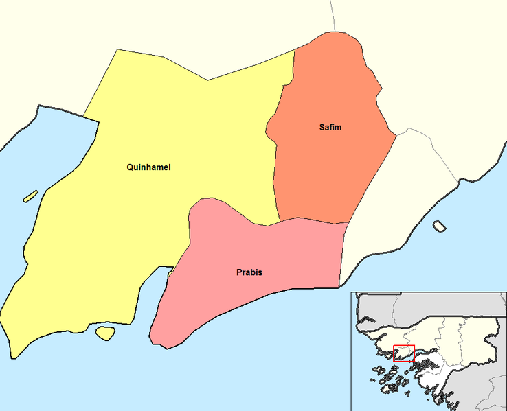
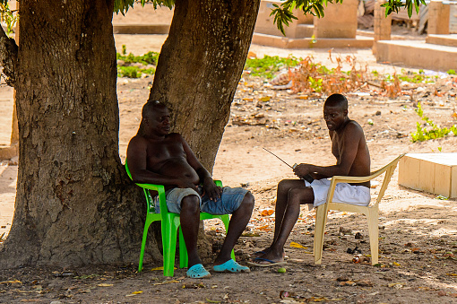

Biombo
Biombo is a region in western Guinea-Bissau, with an area of 840 km2 and its capital is Quinhámel. There has not been any local administration since the civil war of 1998-99, and all the social services are done by organs of civil society and other government agencies. It is a coastal region covered with Mangrove swamps, rain forest, tangled forest, and receives an annual rainfall of more than 1,000 mm (39 in).
Administration
Biombo is divided into 3 sectors, namely, Prabis, Quinhamel and Safim. Guinea-Bissau got independence from Portugal on 24 September 1973 after wars and diplomatic political actions under the Partido Africano da Independência de Cabo Verde
Economy
As of 2009, there net activity rate was 50.47 per cent, proportion of employed labour force was 35.03 per cent, proportion of labour force was 77.74 and the proportion of potentially active population was 35.03 per cent

The major economic activity in the parts around the rivers and the coastal areas is fishing, while it is agriculture in the inland areas. As of 2011, the total population which is active constitutes 60 per cent nationwide indicating there are lot of employed people.
Cultur
The Balanta play a gourd lute instrument called a kusunde. On the kusunde instrument, the short string is at the bottom rather than at the top, the top string was of middle length and the middle string is the longest although it was capoed by the middle length string and its open sounding length is therefore the same as that string.